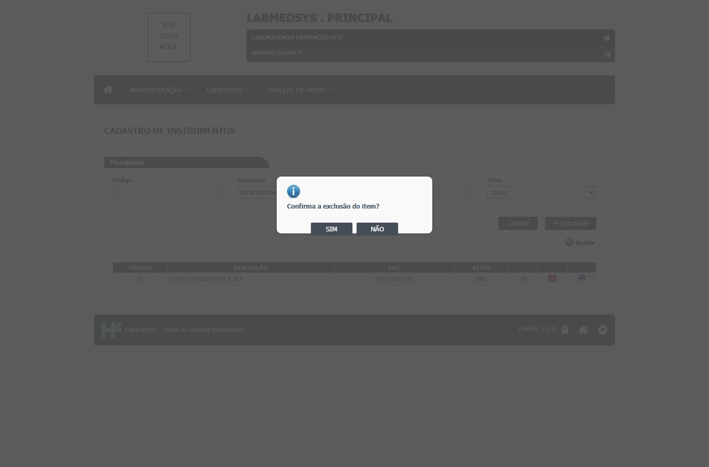
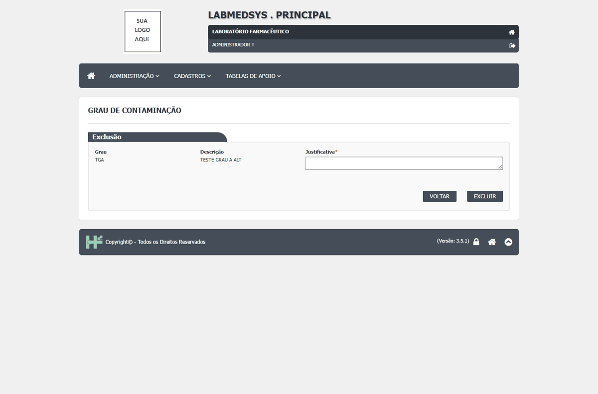
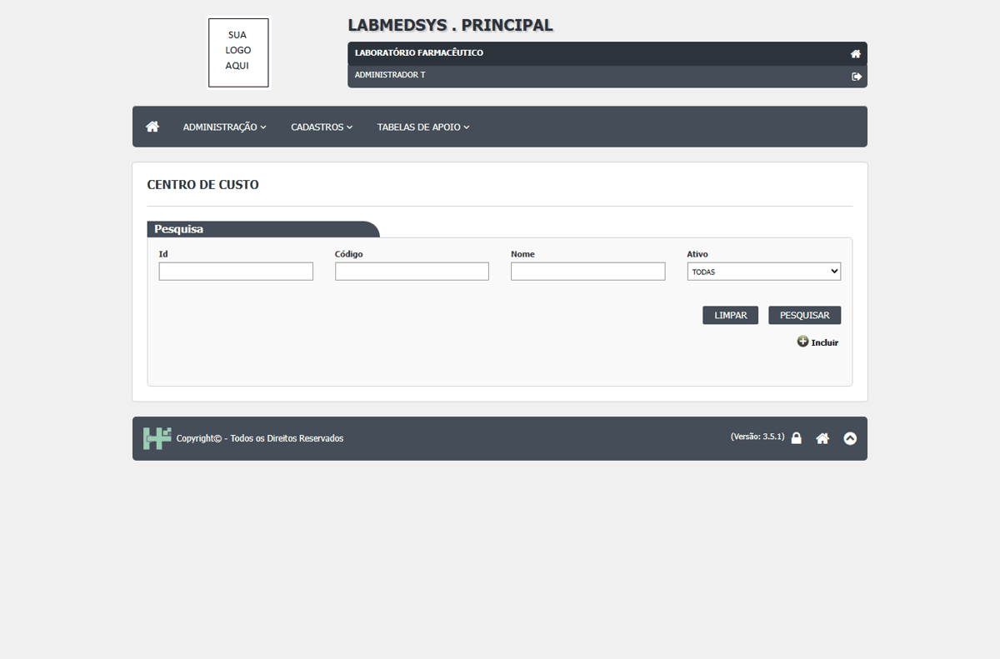

DV-PRI-044 · Centro de custo, Pontos de água, Instrumentos, Utensílios e Utilidades são excluídos sem pedir justificativa
Nos cinco cadastros, o ícone Excluir abre só a pergunta SIM/NÃO na própria lista e, no SIM, o registro some, sem campo de justificativa. A alteração dos mesmos cadastros cobra justificativa e registra no histórico. Já o Grau de contaminação, o Local físico, a Conta gerencial e a Conta contábil têm tela própria de exclusão com justificativa obrigatória: é o modelo que as outras telas deveriam seguir. Mesmo problema do DV-PRI-040 (Categoria), DV-PRI-036 (Grupo) e DV-PRI-009 (Ambiente e Equipamento).
Como reproduzir o erro, passo a passo
- Em cada cadastro, incluir um registro TESTE e inativá-lo.
- Pesquisar o registro e clicar no ícone Excluir.
- Responder SIM.
Esperado
Tela de exclusão com justificativa obrigatória e registro do excluído no histórico.
Obtido
Excluídos só com SIM/NÃO.
Evidência (captura da tela)


DV-PRI-027 · O histórico de Funções profissionais, Grupo de usuários e Centro de custo não mostra a justificativa digitada
Nas três telas a justificativa é cobrada ao alterar ("A Justificativa é obrigatória!" / "O campo justificativa é obrigatório!"), mas o histórico guarda o valor antigo e o novo sem o motivo: a linha "Justificativa:" aparece vazia (Funções e Grupo) ou nem aparece (Centro de custo) mesmo quando o texto foi digitado. Categoria de equipamento e Conta gerencial guardam o motivo corretamente. No Profissional, ao contrário, o motivo aparece no histórico (em maiúsculas).
Como reproduzir o erro, passo a passo
- Entrar no módulo Principal, abrir Administração › Funções profissionais (ou Cadastros › Grupo de usuários) e abrir um registro TESTE pelo ícone Editar.
- Mudar a descrição, digitar a justificativa TESTE justificativa da alteracao e SALVAR REGISTRO, confirmar com SIM.
- Voltar à lista e clicar em Ver Log Alteração do mesmo registro.
Esperado
O histórico mostra, para cada campo alterado: valor antigo, valor novo, quem, quando e a justificativa digitada.
Obtido
Valor antigo, valor novo, usuário, data e hora aparecem; "Justificativa:" fica em branco nas duas telas.
Evidência (captura da tela)


DV-PRI-043 · Centro de custo apaga as letras do código sem avisar (TCC01 vira 01)
Digitei o código `TCC01` e o sistema gravou `01`. O campo parece aceitar só números, mas apaga as letras sem recusar nem avisar. Mesmo padrão do nome do profissional (DV-PRI-032) e do `_` do perfil (DV-PRI-001).
Como reproduzir o erro, passo a passo
- Abrir Cadastros › Centro de custo, Incluir.
- Código TCC01, Nome TESTE CC A, SALVAR.
- Pesquisar o nome na lista.
Esperado
Recusar letras com mensagem, ou gravar o que foi digitado.
Obtido
Gravado como 01.
Evidência (captura da tela)
